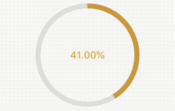

3.8 进度指示器
Material组件库中提供了两种进度指示器：LinearProgressIndicator和CircularProgressIndicator，它们都可以同时用于精确的进度指示和模糊的进度指示。精确进度通常用于任务进度可以计算和预估的情况，比如文件下载；而模糊进度则用户任务进度无法准确获得的情况，如下拉刷新，数据提交等。
3.8.1 LinearProgressIndicator
LinearProgressIndicator线形的进度指示器，看文档如下：
const LinearProgressIndicator({
Key key,
double value,
Color backgroundColor,
Animation<Color> ,
String semanticsLabel,
String semanticsValue,
})
value默认为null，效果为动画,范围是[0,1]backgroundColor是动画背景颜色，为静态的valueColor是动画前景色，可以使用AnimationController搭配达到颜色变化的目的。也可以使用AlwaysStoppedAnimation来达到静态颜色。例子：
LinearProgressIndicator( valueColor: AlwaysStoppedAnimation(Colors.orange), backgroundColor: Colors.black12, )效果：

设置大小和线条宽度：
SizedBox(
height: 20,
width: 200,
child: LinearProgressIndicator(
// value: 0.1,
valueColor: AlwaysStoppedAnimation(Colors.orange),
backgroundColor: Colors.black12,
),
),
效果：
CircularProgressIndicator
CircularProgressIndicator是原型进度指示器，可以自己配置颜色和进度，相关属性紧紧比LinearProgressIndicator多了一个线条宽度strokeWidth.
相关属性：
CircularProgressIndicator({
...
double value,
Color backgroundColor,
Animation<Color> valueColor,
this.strokeWidth = 4.0
...
})
value默认为null，效果为动画,范围是[0,1]backgroundColor是动画背景颜色，为静态的valueColor是动画前景色，可以使用AnimationController搭配达到颜色变化的目的。也可以使用AlwaysStoppedAnimation来达到静态颜色。this.strokeWidth默认为4，可以自定单独设置。例子：
CircularProgressIndicator( valueColor: AlwaysStoppedAnimation(Colors.orange), backgroundColor: Colors.greenAccent, )效果：

自定义外观
通过strokeWidth定义线条宽度，通过valueColor定义渐变色,backgroundColor定义背景色。
例子：
AnimationController _controller;
@override
void initState() {
_controller =
AnimationController(vsync: this, duration: Duration(milliseconds: 2000))
..repeat();
super.initState();
}
SizedBox(
height: 200,
width: 200,
child: CircularProgressIndicator(
valueColor: ColorTween(begin: Colors.grey, end: Colors.orange)
.animate(_controller),
backgroundColor: Colors.black12,
strokeWidth: 10,
),
),
效果：
更多进度指示器 和好网的样式可以参考flutter_easyHub
进度条
利用value可以定制，可以用在下载进度指示器上。
例子：
AnimationController _controller;
Timer _timer;
double _value = 0;
@override
void initState() {
_controller =
AnimationController(vsync: this, duration: Duration(milliseconds: 2000))
..repeat();
_timer = Timer.periodic(Duration(milliseconds: 16), (t) {
_value += 0.01;
if (_value >= 1.0) {
_value = 0;
}
setState(() {});
});
super.initState();
}
SizedBox(
height: 200,
width: 200,
child: Stack(
children: <Widget>[
Positioned.fill(
child: CircularProgressIndicator(
valueColor: ColorTween(begin: Colors.blue, end: Colors.orange)
.animate(_controller),
backgroundColor: Colors.black12,
strokeWidth: 10,
value: _value,
),
),
Positioned.fill(
child: Center(
child: Text(
'${(_value * 100).toDouble().toStringAsFixed(2)}%',
style: TextStyle(fontSize: 20, color: Colors.orange),
),
))
],
),
),
效果：
